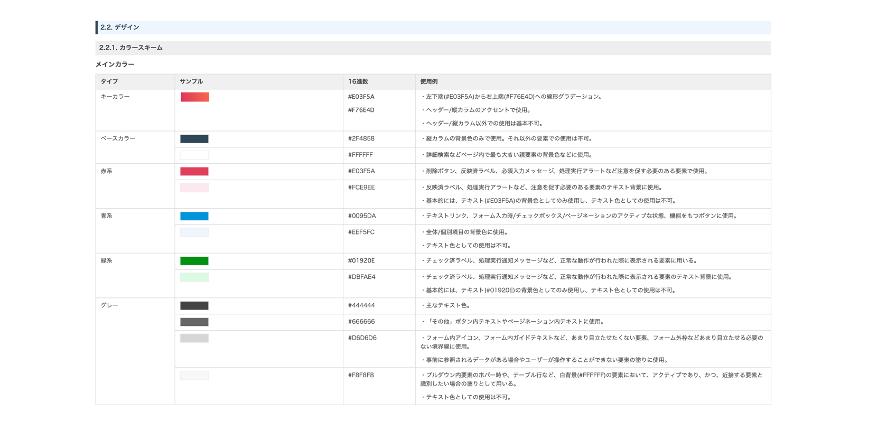

- 概要
- 全社で使用されている入稿ツールのUI、開発環境の改修を担当。
サービスがローンチして以降、デザイナーがいない状態から運用されていた。そのため、実装の他にデザインの文化がない状態からはじめデザイン文化の啓蒙、共通言語を作る目的でスタイルガイドの策定を実施した。
- 担当：UI作成、実装、スクラム管理
- 使用ツール：sketch / abstract
- 環境：Vueフレームワーク
- 期間：2019年4月-
- メンバー：4人
- 作業内容
- UI改修
- 社内ツールのUIを要件に応じて改修を実施。案件に応じて、文言や表示内容の提案などを実施。開発の進め方はスクラムにて運用し、デザインチームのスクラム管理を担当し、案件管理・スクラムの進捗管理を行なった。
- スタイルガイドの策定
-
ツールのリニューアル作業に伴い、デザインの共通言語化を図る目的で、スタイルガイドの作成を行なった。
作業内容としては、コンセプト設計後に、コンセプトから作成案のチーム内コンペを実施し、スタイルガイド設定後の姿を模索。
その後、いくつかのプロトタイプを経て、ドキュメントにスタイルガイドを落とし込み、展開を行なった。また、スタイルガイドを適応したことでユーザビリティに影響がないかの検証のため、プロトタイプを用いたユーザビリティテストを実施。検証手法はウォークスルーを用いた。
